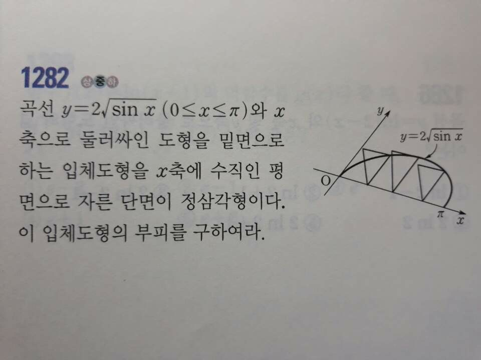
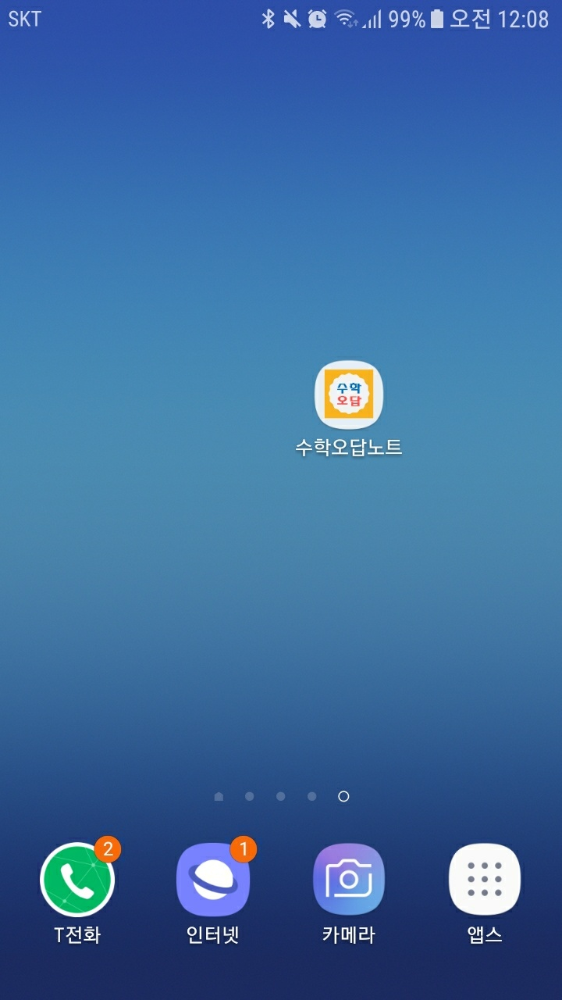

-시간절약 어플
-성적향상 어플
-수학공부 어플

오답노트를 만드는 시간을 절약하기위해 수험생들을 위한 공부 어플 '수학오답노트'의 사용방법에 대해 알려드리겠습니다.
1.공부를 하다가 틀린 문제가 있으면 카메라를 켜서 문제를 촬영합니다

2.그리고 오답노트를 하기 위해 '수학오답노트'앱을 켭니다.

3. 앱을 킨 다음 자신이 촬영을 했던 문제들을 위에있는 '문제'버튼을 눌러 찾습니다(만약 사진촬영을 미리 안하
셨다면 위에있는 사진촬영버튼을 눌러 사진들을 저장합니다.)

4.문제 버튼을 누르면 갤러리로 이동하는데 거기에서 자신이 찍은 문제사진들을 같고옵니다(나머지 문제들도 같이 적용합니다).
4-1.만약 자신이 찍은 문제가 잘 보이지 않는다면 위에있는 밝기 버튼을 눌러 문제를 밝게 해주시면 됩니다.

5. 그리고 자신이 만든 오답노트를 위에있는 출력버튼을 누릅니다.(출력을 누를시에는 그 해당 화면을 캡처하는 것이니
문제가 다보이게 해놓습니다.)

6. 그리고 스마트폰에 저장해놓은 사진을 카톡에다 올려 컴퓨터에 저장하거나 블루투스를 사용하여 인쇄를 하면 됩니다.
리뷰 남기기
피드백 및 버그신고 : tikibird@naver.com
많은 피드백, 리뷰는 개발자에게 큰 힘이 됩니다!